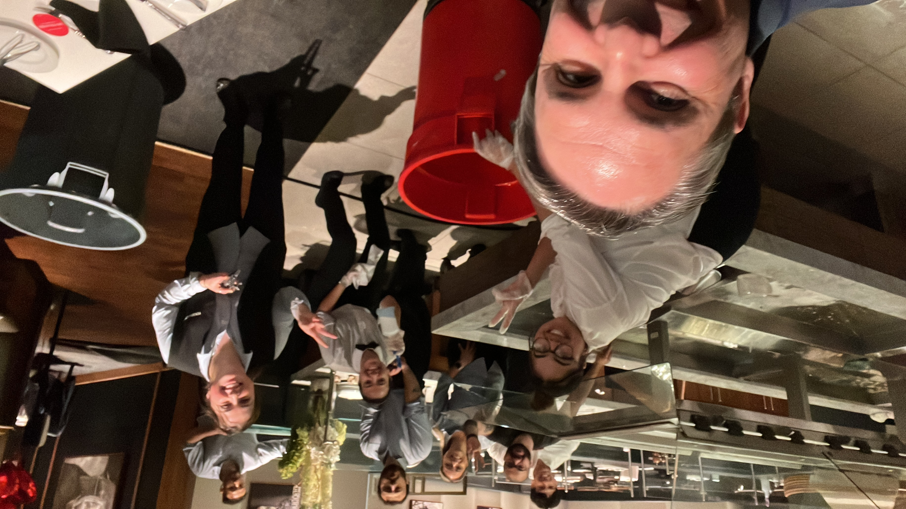

Executive Profile
Hospitality operations leader with over 15 years of experience across upscale dining, luxury hospitality, restaurant openings, team development, and high-volume operations in the United States and Brazil.
Alexandre Garcia has established a reputation for operational excellence in high-volume, premium hospitality environments. He brings a proven history of managing operations with annual revenue exposure exceeding $14M, directing cross-functional teams of up to 120 employees, and delivering consistent service to over 3,000 weekly guests.
He combines deep culinary knowledge, guest experience leadership, and operational discipline to align people, processes, and financial performance. By focusing on practical systems, labor scheduling adjustments, and food cost protections, he ensures that daily kitchen operations maintain strict margin compliance without compromising the guest journey.
